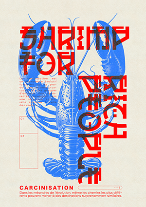

HOMARD
Cette affiche s’empare du concept fascinant de la « carcinisation » — cette tendance qu’ont des crustacés issus de lignées très différentes à converger, au fil de l’évolution, vers la même morphologie : celle du crabe, parangon de compacité, de résistance et d’efficacité biologique. En filigrane, elle interroge le poids des trajectoires imposées : qu’il s’agisse d’ADN ou de codes sociaux, tout semble pousser, tôt ou tard, vers une forme jugée optimale.